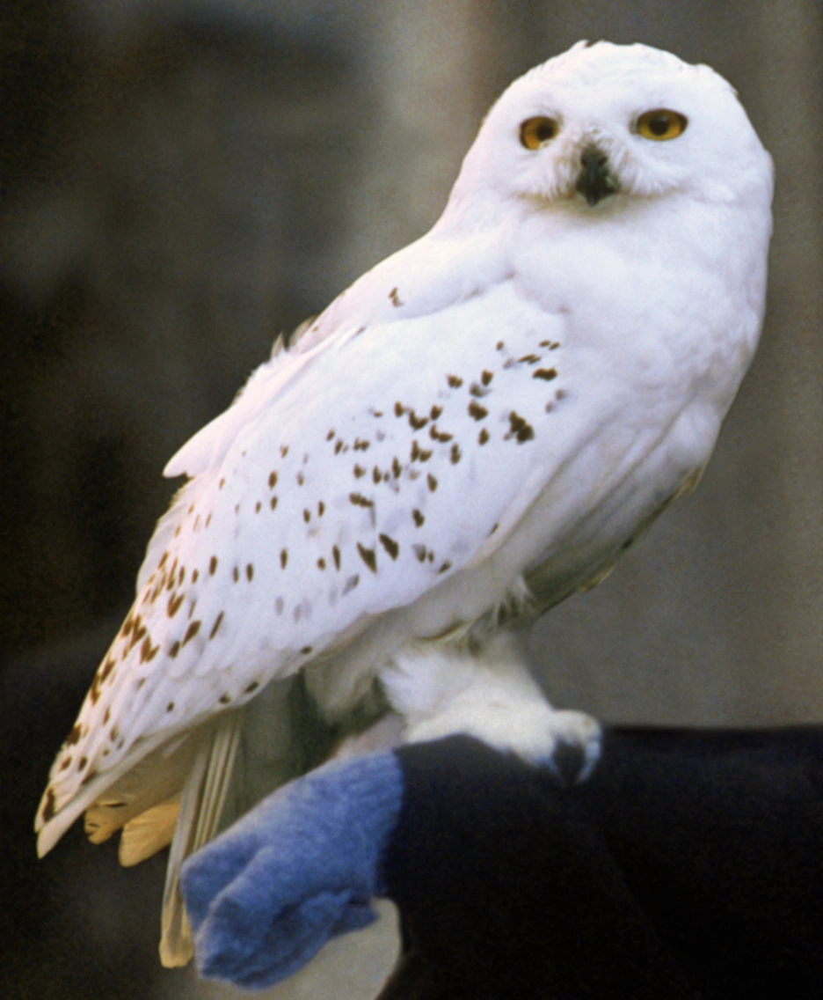

Hello, I am Samara Augustin, an intern at CodePath!

I enjoy spending my free time reading books, especially fantasy novels such as the Mistborn series. I also like watching anime and movies. My favorite anime is One Piece and tv-show is It's Always Sunny in Philadelphia. My favorite food is seafood and favorite color is blue. I used to do track and field in high school and would love to vacation in places where I can go shopping! Some of the music I like include gospel and rock music. Some bands include maverick city music and red hot chili peppers.